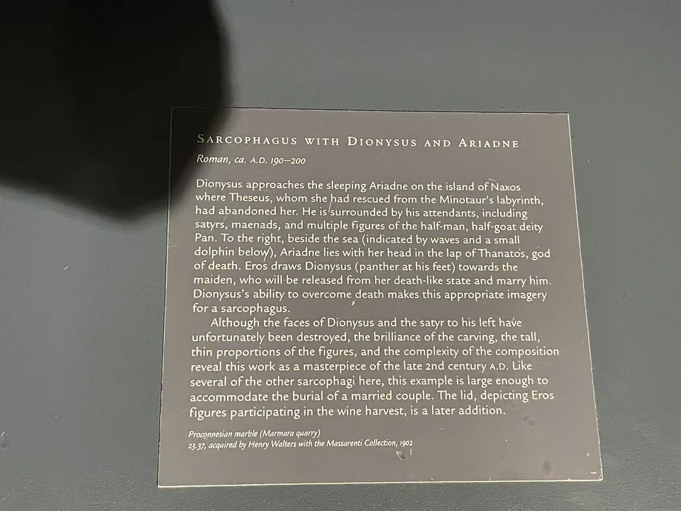

ROMAN SARCOPHAGI / R18
狄俄尼索斯与阿里阿德涅石棺
拥挤的酒神队伍在右端安静下来，那里有一个仍在沉睡的人。

- 年代
- 190–200年
- 材料
- 普罗孔尼索斯大理石
- 收藏
- 沃尔特斯艺术博物馆
- 观看地点
- 沃尔特斯艺术博物馆 · 巴尔的摩
- 馆藏号
- 23.37
- 发现地记录
- 罗马（具体1885年所谓Licinian墓来源，馆方加方括号）
走向卧睡的阿里阿德涅
狄俄尼索斯与随从占据左侧和中部，右端女子横卧，身体的长线与其他人的立姿形成对照。沃尔特斯将她识为被忒修斯留在纳克索斯岛的阿里阿德涅，身下海浪和小海豚提示岸边环境。依馆方解释，爱神引酒神走向她，这次相遇终将带来婚姻。 [24]
相遇与后来组合的棺盖
馆方从酒神使她离开近似死亡的沉睡状态，解释这类图像的墓葬意味。上面的采葡萄小爱神棺盖却是后配，不能当作原初整体的证据。石棺由Henry Walters在1902年随Massarenti收藏购得，1931年遗赠博物馆。 [24]
现场展签 · 1张

资料与来源
断代、收藏与文献说明
阿里阿德涅头旁人物，馆方识为Thanatos（死神）。馆方1885年发现记录带有方括号，其具体来源仍有待核实。 [24]